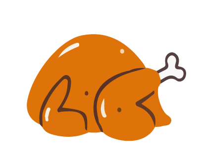

Las proteínas de origen animal
Son alimentos que vienen de los animales, como la carne, el pescado, los huevos, el pollo, los mariscos, entre otros. Ayudan a desarrollar músculos, tener buenas defensas y crecer fuerte.
Carne de cerdo
Carne de res
Huevo
Pavo
Pescado

Pollo
Sardina
Las proteínas de origen vegetal
Son alimentos que vienen de las plantas. Ayudan a crecer, tener energía y fortalecer músculos y defensas, igual que las proteínas de origen animal.
Almendra
Maní
Nuez
¡Veamos el mapamundi!
¡Siempre ténlos presentes!
¡Haz clic en el botón!